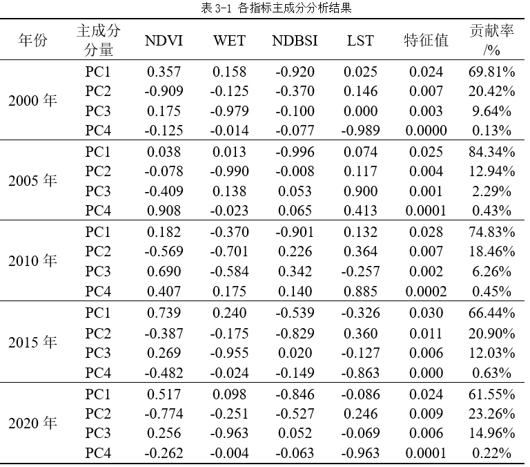

| 选择指标 | 在反映生态质量的自然因素中，选择与人类直观感觉生态系统优劣的四个指标（绿度、湿度、热度、干度）评价生态系统。对提取出的分量指标进行标准化处理，消除各个指标量纲上的差异，再利用主成分分析法确定指标权重建立遥感生态指数评价模型。RSEI遥感生态指数可以用4个分量指标的函数表示：RSEI=f(WET,NDVI,NDBSI,LST) 绿度指标（NDVI） 绿度指数使用的是归一化植被指数（NDVI），湿度指数(WET)由遥感数据经过缨帽变换得到，干度选用裸土指数(SI)和建筑指数(IBI)加权平均后的结果(NDBSI)来代表，热度指标（LST）使用Landsat热红外波段反演的地表温度代表热度指标，反演地表温度（LST）采用大气辐射传输方程法。 |
| 构建指数 | 由于所得四个指标的量纲不统一，因此为减少不同指标数值大小对生态遥感指数结果影响，对这些指标进行归一化处理，以便后续进行主成分分析。 |
| 验证模型 | 将标准化后的分量指标进行PCA变换后得到主成分分析结果。之后根据信阳市2000-2020年RSEI指数，统计各分量指标主成分分析结果如下表所示： |
| 验证结论 | 由表3-1可得：第一主成分（PC1）集中了大部分特征，且各分量指标对PC1的荷载比较稳定，贡献率均维持在61%以上，因此基于主成分分析的第一波段提取RSEI是可行的。对分量指标荷载值分析后发现生态环境质量与NDVI和WET成正效应，与NDBSI和LST成负效应，与实际符合。而且在近二十年内，仅有2005年LST值在PC1荷载的数值最大，表明在此年热度对RSEI的影响最高，信阳市整体的生态环境质量较2000年相比有恶化的趋势。其他年份均为NDVI在PC1荷载的数值最大，说明绿度对于RSEI影响最大，即植被覆盖对信阳市的生态环境起主导因素。 |